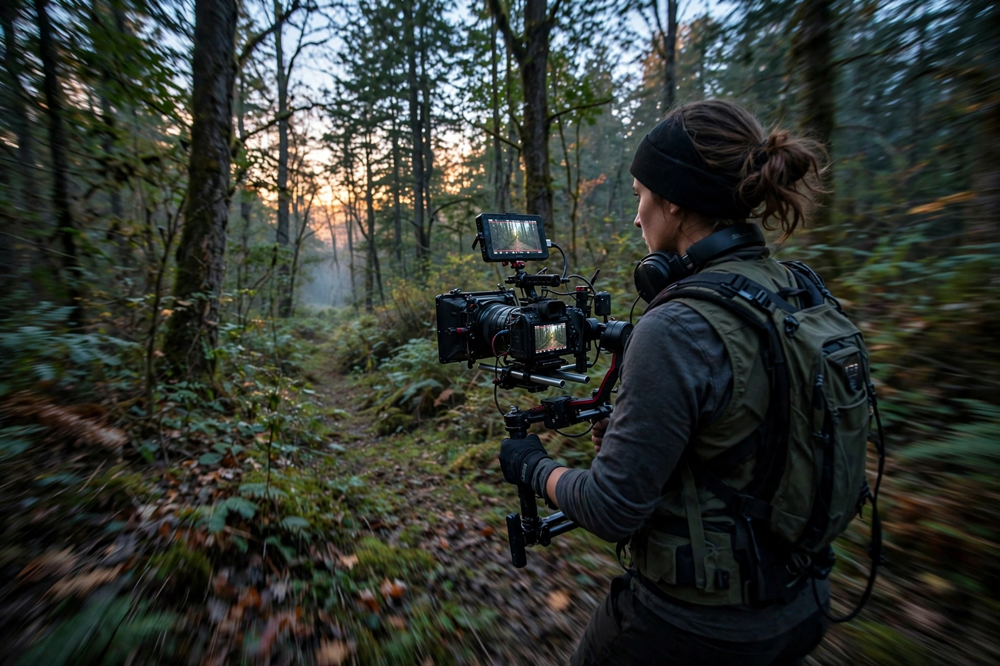

| Emmanuel Lubezki | |
| Born | November 30, 1964, Mexico City, Mexico |
|---|---|
| Occupation | Cinematographer |
| Years active | 1983–present |
| Awards | Three consecutive Academy Awards: Gravity (2013), Birdman (2014), The Revenant (2015) |

Emmanuel Lubezki Morgenstern, A.S.C., A.M.C. (born November 30, 1964), nicknamed "Chivo", is a Mexican cinematographer known for his fluid long takes, use of natural light, and immersive moving camera. He is the only cinematographer to have won the Academy Award for Best Cinematography three years in a row.
Lubezki studied film at the Centro Universitario de Estudios Cinematográficos in Mexico City, where he met Alfonso Cuarón. Their collaborations include Sólo con tu pareja (1991), A Little Princess (1995), Great Expectations (1998), Y tu mamá también (2001), and Children of Men (2006), the last famous for its long, unbroken action sequences. With Terrence Malick he developed a free-floating, available-light style on The New World (2005) and The Tree of Life (2011).
For Cuarón's Gravity (2013), Lubezki helped invent LED "light box" technology to simulate orbital sunlight for digitally composited long takes. He followed it with Alejandro González Iñárritu's Birdman (2014), staged to appear as a single shot, and The Revenant (2015), photographed entirely in natural light in remote winter locations — completing an unprecedented hat-trick of Academy Awards.
Lubezki favors wide-angle lenses, minimal artificial lighting, and long choreographed takes that place the viewer inside the scene, often shooting at the "magic hour" around dawn and dusk.